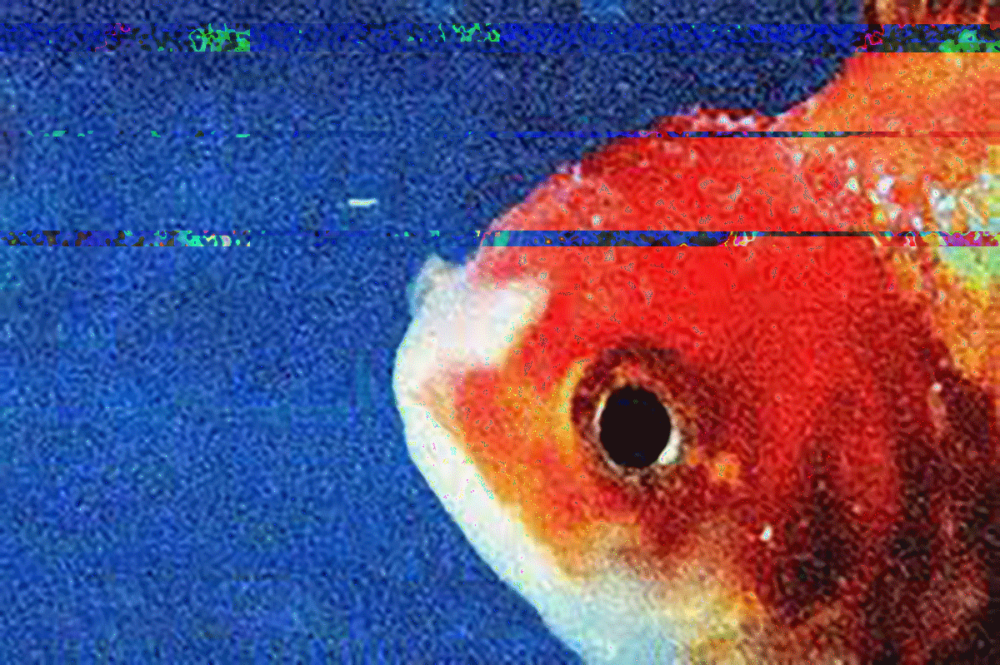

GLITCH ART
DATABENDING
The process of data bending allows us to explore an artistic range of concepts that drastically differs from art before the age of technology. It creates new meaning and shifts the perspective of a single image to a new distorted perspective that can be interpreted different. This gif was originally a single image from album cover art. My goal for this was predominantly to be experimental and gain knowledge about the art of data bending.
created with TextEdit.
